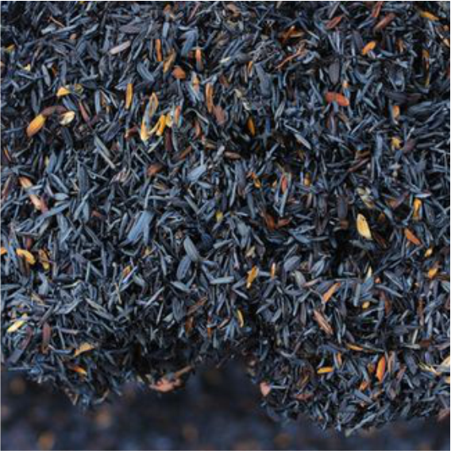
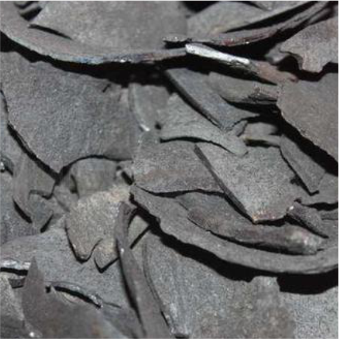
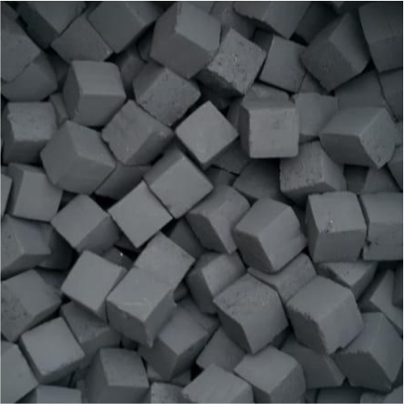
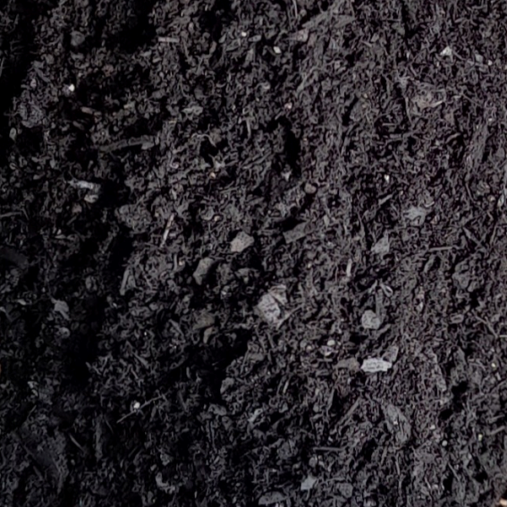
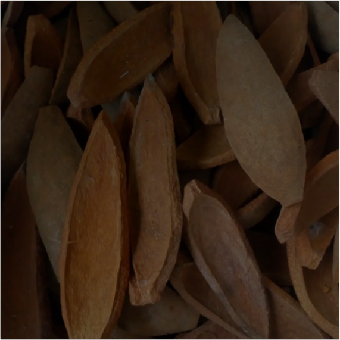

|
ARANG KAYU Arang kayu adalah arang yang terbuat dari bahan dasar kayu. Arang kayu paling banyak digunakan untuk keperluan memasak seperti yang dijelaskan sebelumnya. Sedangkan penggunaan arang kayu yang lainnya adalah sebagai penjernih air, penggunaan dalam bidang kesehatan, dan masih banyak lagi. Bahan kayu yang digunakan untuk dibuat arang kayu adalah kayu yang masih sehat, dalam hal ini kayu belun membusuk. |
|  | ARANG SEKAM PADI Arang sekam padi biasa digunakan sebagai pupuk dan bahan baku briket arang. Sekam yang digunakan bisa diperoleh ditempat penggilingan padi. Selain digunakan untuk arang, sekam padi juga sering dijadikan bekatul untuk pekan ternak. Arang sekam juga bisa digunakan sebagai campuran pupuk dan media tanam di persemaian. Hal ini karena sekam padi memiliki kemampuan untuk menyerap dan menyimpan air sebagai cadangan makanan. |
|  | ARANG TEMPURUNG KELAPA
Arang tempurumg kelapa adalah arang yang berbahan dasar tempurung kelapa. Pemanfaatan arang tempurung kelapa ini ternasuk cukup strategis sebagai sektor usaha. Hal ini karena jarang masyarakat yang memanfaatkan tempurung kelapanya. Selain dimanfaatkan dengan dibakar langsung, tempurung kelapa dapat dijadikan sabagai bahan dasar briket arang. |
|  | ARANG BRIKET
Jenis arang yang terakhir dan sudah banyak terdapat dimasyarakat adalah briket arang. Briket arang adalah arang yang terbuat dari arang jenis lain yang dihaluskan terlebih dahulu kemudian dicetak sesuai kebutuhan dengan campuran tepung kanji. Tujuan pembuatan briket arang adalah untuk menambah jangka waktu bakar dan untuk menghemat biaya. |
|  | ARANG SERBUK GERGAJI Arang serbuk gergaji adalah arang yang terbuat dari serbuk gergaji yang dibakar. Serbuk gergaji biasanya mudah didapat ditempat-tempat penggergajian atau tempat pengrajin kayu. Serbuk gergaji adalah bahan sisa produksi yang jarang dimanfaatkan lagi oleh pemilknya. Sehingga harganya bisa terbilang murah. Selain dapat untuk bahan bakar, arang serbuk gergaji biasanya dimanfaatkan untuk campuran pupuk dan dapat diolah menjadi briket arang. |
|  | ARANG KULIT BUAH MAHONI Arang kulit buah mahoni adalah arang dengan bahan dasar kulit buah mahoni. Bila dilihat secara kasatmata, kulit buah mahoni memiliki tekstur yang keras dan padat. Sayang jika hanya dibiarkan tertumpuk disekitar halaman. Arang kulit buah mahoni diproses menggunakan tungku drum, sama halnya dengan arang kayu. arang jenis ini juga dapat diolah menjadi briket arang. Arang yang dihasilkan dari kulit buah mahoni juga terbukti memiliki kualitas yang cukup baik. Jika dibakar hanya mengeluarkan sedikit asap. Nilai kalor yang dihasilkan saat dibakar sangat tinggi dan lebih tahan lama sehingga dapat menghemat biaya pengeluaran. |